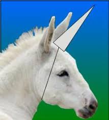

Sara was a not unicorn.
She was a very special unicorn, and her tribe considered her one of the greatest creatures in the world, for Sara had wings, and she could fly.
Great big wings the color of moonlight, could take her soaring into the air above, her white body gleaming in the sun at day, and sparkling in the moon-and star-light at night.
One little girl was her special friend. She lived just outside of the forest that Sara lived in. Her name was Minnie and she loved Sara with all her heart.
One day when they were walking in the forest, Minnie asked Sara, “Dear Sara, would you please, please, take me up with you into the great big sky? I want to see the world from up there. Please, Sara?”Sara replied, "That's not possible, I am not real and there are no such thing as unicorns .... I'm a horse"
click Here to go back to the homepage
Or click Here to read some facts about unicorns